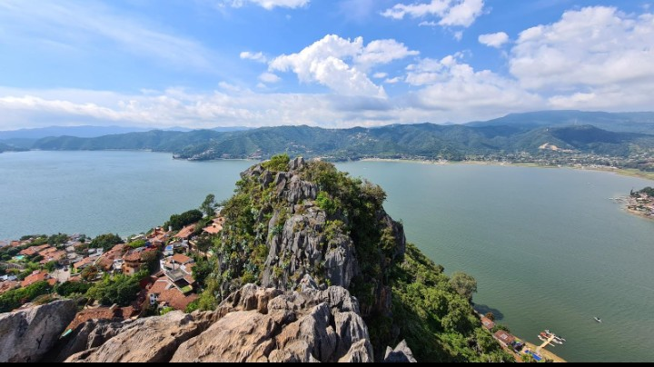
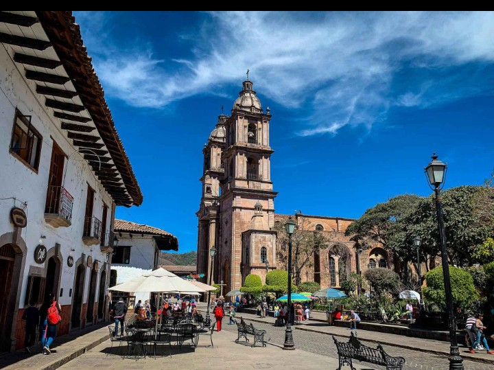
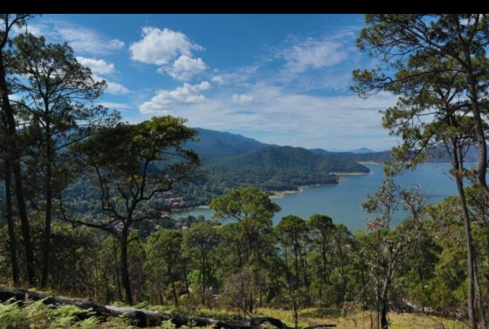
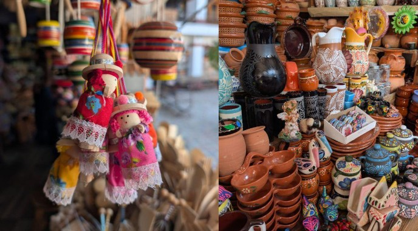

Lago de Valle de Bravo
"Es uno de los principales atractivos del municipio. Está rodeado de montañas y bosques. Los visitantes disfrutan de sus paisajes, paseos en lancha y actividades recreativas."

La Peña
"Es un mirador natural desde donde se puede observar gran parte del pueblo, el lago y las montañas. También tiene importancia histórica por sus antiguos asentamientos prehispánicos"

Parroquia de San Francisco de Asís
"Es uno de los edificios religiosos más representativos del municipio. Destaca por su arquitectura y por las celebraciones religiosas que se realizan en honor a San Francisco de Asís."

Centro Histórico
"Se caracteriza por sus calles empedradas, casas tradicionales y construcciones coloniales. Es un lugar ideal para conocer la historia, cultura y tradiciones de Valle de Bravo."

Parque Estatal Monte Alto
"Es una zona natural protegida que cuenta con bosques, senderos y miradores. Es importante por su biodiversidad y sus paisajes naturales."

Mercado de Artesanías
"Es un lugar donde se pueden encontrar productos elaborados por artesanos locales, como piezas de barro, tejidos, bordados, cestería y diferentes recuerdos de la región."